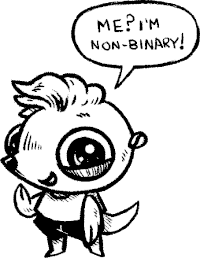

About
About Projects
Projects Books
Books Games
Games Stories
Stories Store
Store Notes
Notes How-to
How-toHow does one go about talking to or about non-binary people in French, a language riddled with genderered words? Below are some notes I've gathered on the subject, with much of the terms coined by others(unless noted otherwise). I've added an asterix next to my preferred terms.
Using gender-neutral language is the most respectful way to address a stranger, choosing pronouns based on how a person looks, or sounds, is very error-prone.
Note that all of these options aren't perfect, but I appreciate that there are people out there thinking about this stuff, refining it as time goes on. I am myself a non-binary French speaker. I wrote this page to have notes for myself, but it can also double as a way of informing English-speakers about developments in French non-binary language.
- Use neutral pronouns
iel*, ol, ul, ælle, al, ille, or ael. Or using the person's name - Use neutral articles
an (un/une), maon (mon/ma) - Modify word terminations
Autaire for auteur/autrice - Portmanteaux
frœur* pour frère/sœur, toustes pour tous/toutes - Modification of conjugations
Using punctuation such as acteur.ice, acteur·ice, acteur-ice, etc.
Pronouns
Non-binary French pronouns are mainly combinations or distortions of the masculine il and the feminine elle, except for ol, ul and al which stray a bit further.
Iel is the most popular pronoun, and was officially adopted into Le Robert dictionary.
Many non-binary people prefer that others use their name when referring to them.
Conjugation
For word conjugations, combine masculine and feminine word endings by using a period, a middle dot, a hyphenation point, or a hyphen.
- Period. Acteur.ice, heureux.se
- Middle dot. Acteur·ice, heureux·se
- Hyphenation point. Acteur‧se, heureux‧se
- Hyphen. Acteur-ice, heureux-se
It is important to note that middle points or periods may cause problems for people who use screen readers. Hyphens, hyphenation points and apostrophes are more inclusive and don't cause breaks in the text.
In general, it is better to use epicene formulations such as "les adultes, les élèves, le personel, la population, and les journalistes," rather than words like "entraineur, directrice, etc."
Doubling words
When writing a letter, or addressing a crowd, not defaulting to masculine terms is good practice. Some documents include both the feminine and masculine words, such as saying "les Québécois et les Québécoises", but there are ways to skirt around doubling by choosing different words...
Example:
À toustes les résidents du Québec...
À toustes les Québécoi·zeuh (adding an audible break and putting emphasis on the inclusive punctuation. Used mainly in oral speech, although it may not be perceived as an error)
In speech, deforming words terminating with é·e aloud.
Example:
Je suis fatiguaé (pronounced fati-gah-é)
But again, this may be perceived as bad pronounciation, especially if one tries to do this for an audience that isn't well-acquainted with non-binary language. The more people make efforts to learn and use it, the easier it'll be for people to detect this kind of subtlety.
Abridged words
Use an abridged version of the feminine and masculine terminations, foregoing mid-word punctuations.
Example:
- heureuxe or heureuxse
- copaine
- cellui-ci(instead of celle-ci and celui-ci).
Mrs, Mme...
A preferred word is mondame, combining monsieur and madame. The english mix (mx, for short) is also occasionally used in French.
Family terms
When referring to both a mother and father, simply using the word parent is often good enough.
Example:
"Mes parents ne sont pas à la maison."
To refer to parents individually, I personally like to use the word mapa, a combination of mama and papa, which combines both and feels more casual, less austere. When referring to a lover I like to use the term partenaire.
- cousin, cousine: cousaine, cousan
- frère, sœur : frœur (one of my favorites)
- neveu, nièce : nevèce, ness
- copain, copine : partneraire*
- parrain, marraine : parraine, marrain
- tonton, tata : tonti, taton